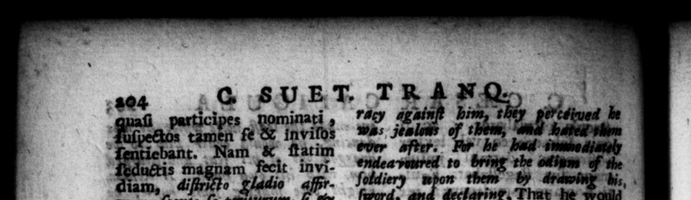

nec vit ex eo A alterum alteri, atque N omnes committere. placuiſſet Palatinis Judis Per = SA f 4 — ili partes Ca ea tribunus & effominatum denot ade omni _ 1 : n Pa Puts TADUM ant dare 5 aus VE; — . 225 1 agenti gratias, vw landam manum erres formatam 3 in obſccoenum mod 22 Futura Cdn multa 8 exſtiterunt. Olym— mulacrum Jovis, quod diſſolvi trans ferrique Romam placuerat, tantum cachinnum repente — ut * — ico quinomine, juſſum ſe ſomnio affirmans im molare taurum Jovi. Capi—_ Capua Idibus * — de c#lo tactum eſt: Nome cella Palatini —— Nee defuerunt qui conjectarent altero oſtento periculum a cuſtodibus domino portendi: altero, cædem rurſus inſignem, a eodem die facta quonfuiſſet. Co nſulenti guoque de genitura ha, Sulla — certiſſng am neapprepinguare a 1 8 onaerunt ſoxtes An tine wt 4 Caſo cavertt, Qua cauſa ille Caſſi um Lo num Aſiz tum uulem oocidendum delegaverat, immice Cheram Caſſium £lorle Cit ; quem 2 rn Coney — | . The The epi 1 ſotdiery 8 — 4 — death * fall on ham as I: * from the Palatine Cheres g of 4b 25 the in 1 | F. The Gheres war now” a" Pan, whom Cains was 92 the moſt currilas abut * : 2 7 — fe inf wht the watch-word, he world = Priapns or Venus; ant return d than ks 1 upon any oct he would offer him bis hand 10 bs 4 Nun, and geſinre of. lewd ary, $7, There were e prodigit that gave —_ bis aching fate. The 8 ht lywpia, which ed to be nw bt to 6 Rome, all 4 ; ſua out into ſuch 4 Violent $1 of | that the machines ea in 1/00 at being all in dz her upon it, . 2 1 5 E reh, as | 24 at too, rhe pray For the principal laue about the 72 which ſome . as a Wor: that upon the ides of ome the Ae ee, yhathe © 65 e 4 not able ee, 255 85 72 757 a, e e ty Bi bout” bis nativity, fared him death would ha ably and ly befall him. The wacle of at untium, lei 1 of Caſſius ; for which rea ſin he hall vw waders for he parting.” 10 ty * . » . 2 »
